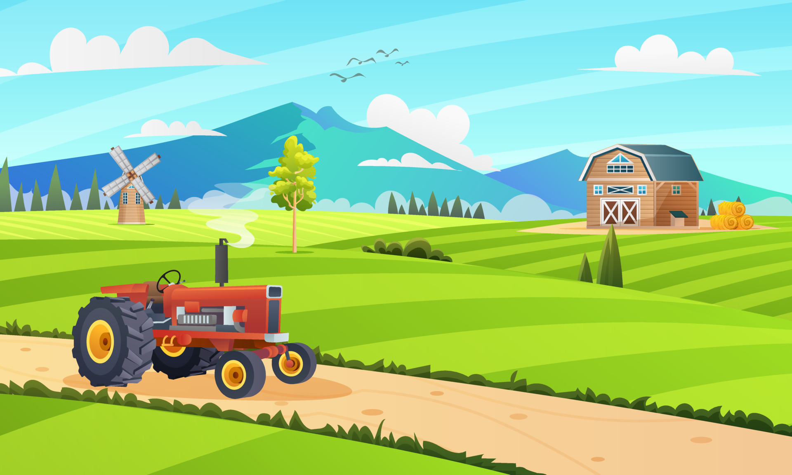

O Campo: A Base da Semente
No campo, o agricultor semeia mais do que apenas grãos; ele planta sonhos e esperanças em solo fértil. Cada estação traz um ciclo de trabalho árduo, paciência e dedicação. As raízes profundas da vida rural fornecem uma base sólida, onde a conexão com a terra ensina a importância de nutrir e cultivar. É aqui que se aprende o valor da persistência e do planejamento, o que serve de alicerce para a jornada que se segue.
A Transição: Adaptando-se ao Novo Ambiente
Quando o campo cede lugar ao asfalto e às construções, a adaptação torna-se uma nova fase da jornada. O ambiente urbano, com sua dinâmica acelerada e suas oportunidades diversificadas, exige uma mudança de perspectiva. Aqui, as habilidades adquiridas no campo são reavaliadas e ajustadas. É um período de aprendizado contínuo, onde o conhecimento da vida rural encontra novas formas de aplicação em um cenário urbano.
Semear e Colher Oportunidades
A transição do campo para a cidade é mais do que uma mudança de local; é uma oportunidade para semear e colher novos frutos. No ambiente urbano, as sementes plantadas no campo transformam-se em novas possibilidades. O agricultor que antes cultivava a terra agora pode encontrar novos caminhos para aplicar sua experiência, seja através da inovação em tecnologias agrícolas, na educação sobre práticas sustentáveis, ou até mesmo na criação de negócios que unem o conhecimento rural com a demanda urbana.
O Valor da Transformação
Cada desafio encontrado ao longo do caminho é uma oportunidade para crescimento e aprendizado. A jornada do campo à cidade é uma metáfora para a capacidade humana de se transformar e prosperar em diferentes contextos. As dificuldades enfrentadas são sementes que, quando bem cuidadas, podem levar a conquistas significativas. O processo de adaptação e inovação permite que se aproveite o melhor dos dois mundos: a solidez das raízes rurais e a vitalidade das oportunidades urbanas.
Conclusão: Conectando o Passado ao Futuro
Ao semear oportunidades na interseção entre o campo e a cidade, construímos um legado de adaptabilidade e crescimento. A jornada do campo à cidade é uma celebração da resiliência e da capacidade de transformar desafios em novas possibilidades. É uma história de como a experiência adquirida nas áreas rurais pode ser a chave para abrir portas e criar novas oportunidades em um ambiente urbano vibrante. Assim, o campo e a cidade não são apenas destinos distintos, mas partes interconectadas de uma jornada contínua, onde cada passo semeia o futuro e cada desafio é uma oportunidade de crescimento.